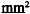

|  |  |  |  |
| 1 | 0.5 | 5Q | COMMANDE ELECTROVANNE DE MODULATION 1 | C718E |
| 2 | 0.5 | 5R | COMMANDE ELECTROVANNE DE MODULATION 2 | C718E |
| 3 | 0.5 | 5DL | COMMANDE ELECTROVANNE DE MODULATION 3 | C718E |
| 4 | 0.5 | 5HG | COMMANDE ELECTROVANNE SELECTION MARCHE ARRET VERROUILLAGE | C718E |
| 5 | 0.5 | 5HX | + ALIMENTATION CAPTEUR | C718E |
| 7 | 0.5 | 5HU | SIGNAL CAPTEUR PRESSION SECONDAIRE (POULIE SECONDAIRE) | C718E |
| 8 | 0.5 | 5HH | COMMANDE BOBINE A MOTEUR PAS A PAS | C718E |
| 9 | 0.5 | 5HK | COMMANDE BOBINE B MOTEUR PAS A PAS | C718E |
| 10 | 0.5 | 5HL | COMMANDE BOBINE C MOTEUR PAS A PAS | C718E |
| 11 | 0.5 | 5HM | COMMANDE BOBINE D MOTEUR PAS A PAS | C718E |
| 16 | 0.5 | 5HQ | SIGNAL SELECTION MEMOIRE REPROGRAMMABLE | C718E |
| 17 | 0.5 | 5BZ | + TEMPERATURE HUILE BOITE VITESSES | C718E |
| 18 | 0.5 | 5HW | SIGNAL CAPTEUR PRESSION PRIMAIRE (POULIE PRIMAIRE) | C718E |
| 19 | 0.5 | 5HN | MASSE CAPTEUR | C718E |
| 21 | 0.5 | 5HP | SIGNAL HORLOGE CALCULATEUR TRANSMISSION VARIABLE CONTINUE | C718E |
| 22 | 0.5 | 5HR | SIGNAL DONNEE ENTREE SORTIE | C718E |